User Manual / คู่มือการใช้งาน
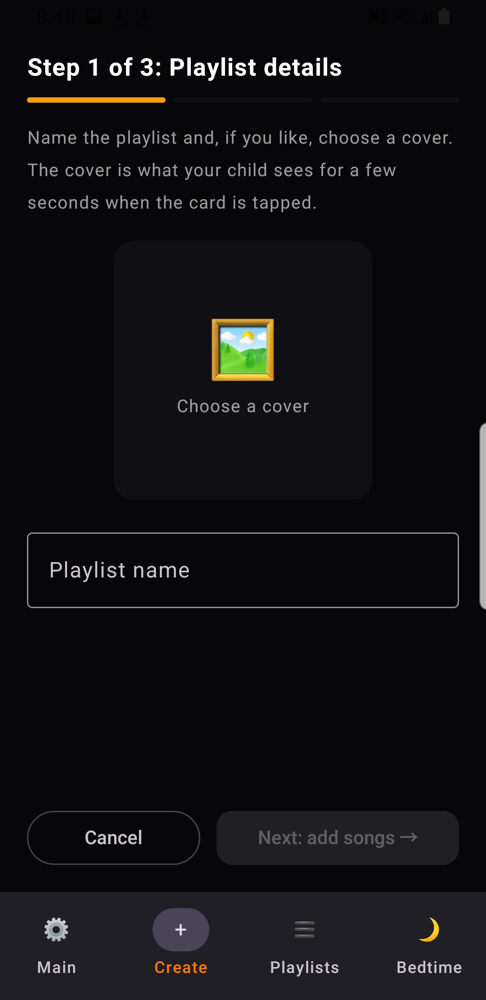
Go to the Create tab. Enter your playlist name and tap Choose a cover to pick an album image from your phone. This cover will appear on screen when your child taps the card.
ไปที่แท็บ Create ตั้งชื่อ Playlist และกด Choose a cover เพื่อเลือกรูปหน้าปกจากในเครื่อง รูปนี้จะแสดงขึ้นมาบนหน้าจอชั่วขณะเมื่อลูกแตะการ์ด
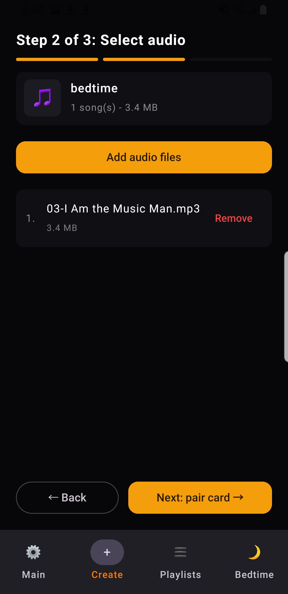
Tap Add audio files to select songs or bedtime audio stored on your phone. You can review the added tracks or remove unwanted ones, then tap Next: pair card.
กดปุ่ม Add audio files เพื่อเลือกไฟล์เพลงหรือนิทานที่ต้องการจากโทรศัพท์ ตรวจสอบรายการเพลงที่เพิ่มเข้ามา จากนั้นกดปุ่ม Next: pair card เพื่อไปขั้นตอนถัดไป
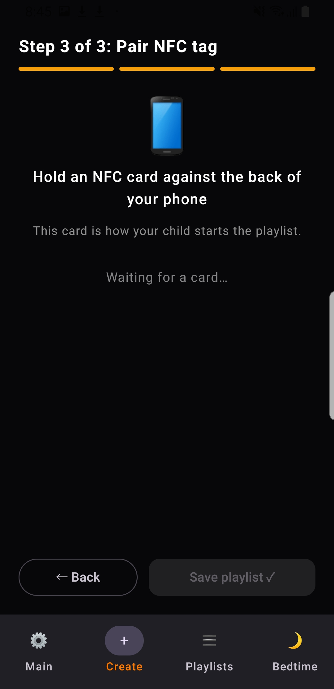
Hold your physical NFC card against the back of your phone. Once detected, the card's UID turns green with a checkmark. Tap Save playlist to finish setup.
นำการ์ด NFC มาทาบที่ด้านหลังของโทรศัพท์ เมื่อเครื่องสแกนติด รหัสการ์ดจะแสดงเป็นสีเขียวพร้อมเครื่องหมายถูก กด Save playlist เพื่อบันทึก
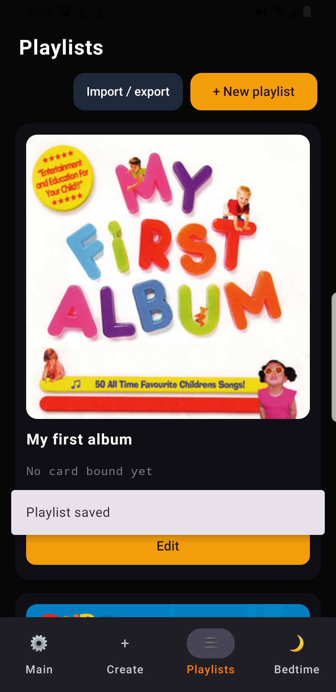
Under the Playlists tab, view all your created cards and edit tracks anytime. You can also import or export playlists to backup or transfer between devices.
ในแท็บ Playlists คุณสามารถตรวจสอบรายการการ์ดทั้งหมดที่สร้างไว้ แก้ไขเพลงได้ตลอดเวลา รวมถึงนำเข้าหรือส่งออกเพื่อสำรองไฟล์และแชร์ไปยังเครื่องอื่น
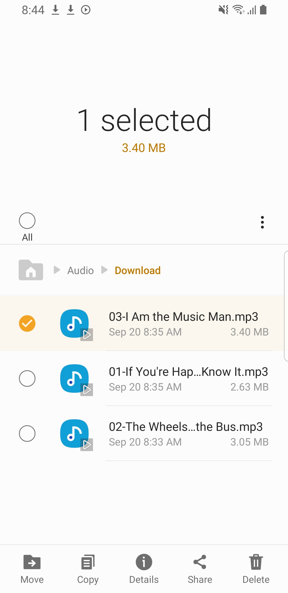
Alternative shortcut: You don't have to open the app first! Open any file manager, download folder, or audio app on your phone, select the music files you want, and tap Share.
วิธีลัด (แชร์จากแอปอื่น): ไม่จำเป็นต้องเข้าแอปก่อน! เพียงเปิดแอปจัดการไฟล์ (My Files), โฟลเดอร์ Download หรือแอปไฟล์เสียงใดๆ เลือกไฟล์เพลงที่ต้องการ แล้วกดปุ่ม Share (แชร์) ด้านล่าง
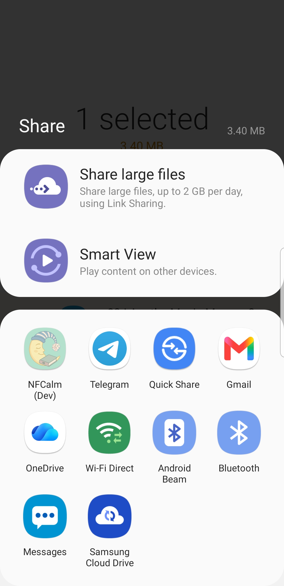
From the system share sheet, select NFCalm to send the audio file directly into the app.
ในหน้ารายการแชร์ของระบบ ให้แตะเลือกแอป NFCalm เพื่อส่งไฟล์เพลงตรงเข้าสู่ระบบของแอปทันที
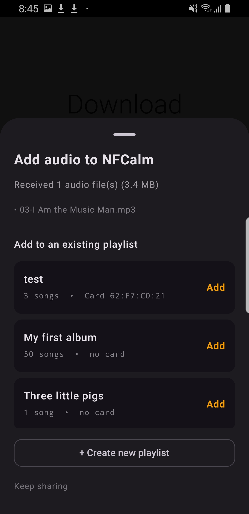
NFCalm will ask how you want to handle the file: tap Add beside any existing playlist to append it immediately, or tap + Create new playlist to open the creation screen with your shared track already queued!
แอปจะแสดงหน้าต่างให้เลือก: กดปุ่ม Add ข้าง playlist เดิมที่เตรียมไว้เพื่อเพิ่มเพลงต่อท้ายทันที หรือกด + Create new playlist เพื่อสร้างใหม่ โดยจะมีไฟล์เพลงที่แชร์มารอใส่ไว้ให้เรียบร้อยแล้ว
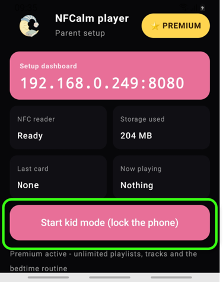
Once your playlists are set, return to the Main tab and tap Start kid mode (lock the phone). The phone is safely locked inside the player so children cannot exit. Simply tap any paired NFC card to start listening.
เมื่อเตรียม Playlist เรียบร้อยแล้ว ให้กลับมาที่แท็บ Main แล้วกด Start kid mode (lock the phone) โทรศัพท์จะล็อกหน้าจอให้อยู่เฉพาะในแอปอย่างปลอดภัย พร้อมให้เด็กนำการ์ด NFC มาทาบเพื่อเริ่มฟังเพลงได้ทันที
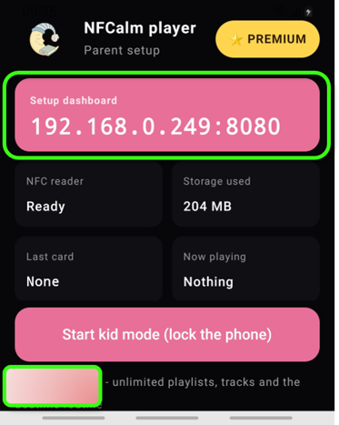
Parent mode home screen. Add music via web app using the IP shown, or link playlists with NFC. Testers can unlock Premium for free using the button in the bottom-left corner.
หน้าจอหลักของโหมดผู้ปกครอง เพิ่มเพลงผ่านเว็บแอปโดยใช้ IP ที่แสดงไว้ หรือเชื่อมต่อ playlist ด้วย NFC ผู้ทดสอบสามารถปลดล็อก Premium ได้ฟรีโดยกดปุ่มที่มุมล่างซ้าย
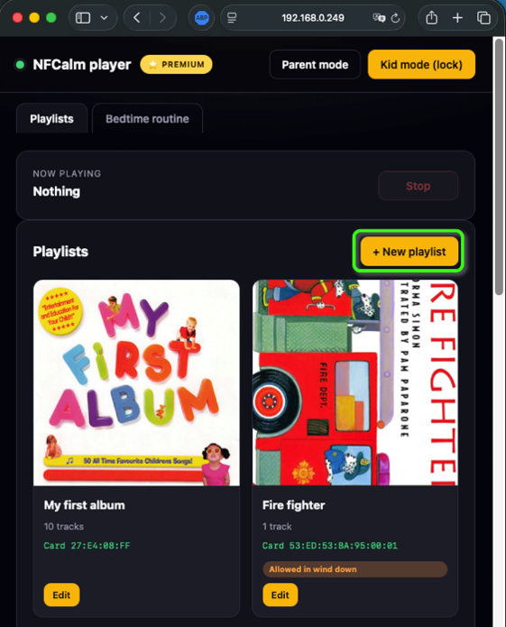
This is the web app for uploading music. Tap "New Playlist" to start.
นี่คือเว็บแอปสำหรับอัปโหลดเพลงบนคอม กดปุ่ม "New Playlist" เพื่อเริ่มต้น
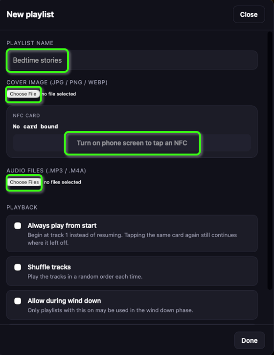
Set playlist name, add cover, upload songs, and link an NFC card (keep phone screen on and ready).
ตั้งชื่อ playlist เพิ่มภาพปก อัปโหลดเพลง และเชื่อมต่อการ์ด NFC (เปิดหน้าจอโทรศัพท์ทิ้งไว้ให้พร้อมใช้งาน)
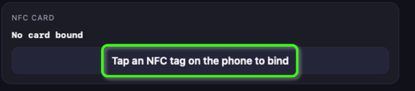
Once the phone screen is on, the button changes to ready-to-tap. Press it.
เมื่อเปิดหน้าจอโทรศัพท์แล้ว ปุ่มจะเปลี่ยนเป็นสถานะพร้อมแตะการ์ด กดปุ่มนั้น
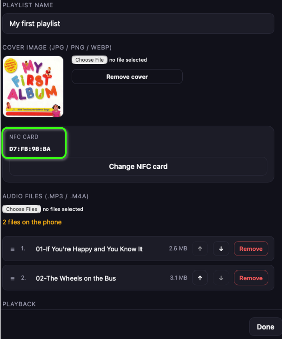
After tapping, the card's UID appears — link successful. This card will auto-open this playlist. Tap "Done" when finished.
หลังจากแตะการ์ดแล้ว จะแสดงเลข UID ของการ์ด แสดงว่าเชื่อมต่อสำเร็จ การ์ดนี้จะเปิด playlist นี้ให้อัตโนมัติ กดปุ่ม "Done" เมื่อเสร็จสิ้น
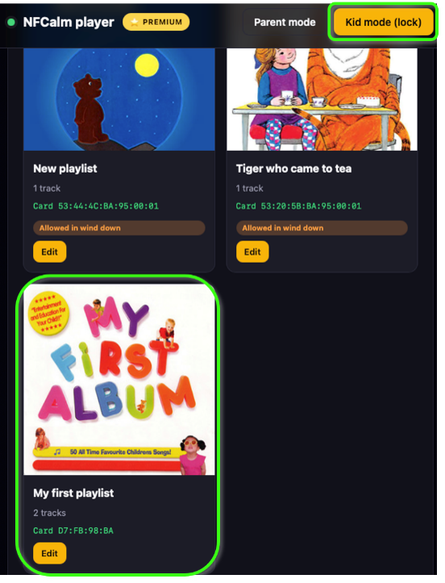
The playlist is now ready. Tap "Kid mode" to lock the phone for safe playback. Once locked, your child can only play music — they cannot exit the app, open other apps, or access any other phone features.
Playlist พร้อมใช้งานแล้ว กดปุ่ม "Kid mode" เพื่อล็อกหน้าจอโทรศัพท์ให้พร้อมเล่นเพลงอย่างปลอดภัย เมื่อล็อกแล้ว เด็กจะสามารถเล่นเพลงได้เท่านั้น ไม่สามารถออกจากแอพ เปิดแอพอื่น หรือเข้าถึงฟังก์ชันอื่นๆของโทรศัพท์ได้เลย
(Optional) You can also lock kid mode directly from the phone.
(อีกวิธี) คุณสามารถล็อก Kid mode ได้โดยตรงจากโทรศัพท์เช่นกัน
Phone switches to Kid mode. Tap an NFC card to start playing — the screen stays locked, keeping kids safe inside the app.
โทรศัพท์จะเปลี่ยนเป็น Kid mode แตะการ์ด NFC เพื่อเริ่มเล่นเพลง — หน้าจอจะถูกล็อกไว้ ทำให้เด็กปลอดภัยอยู่ในแอพเสมอ